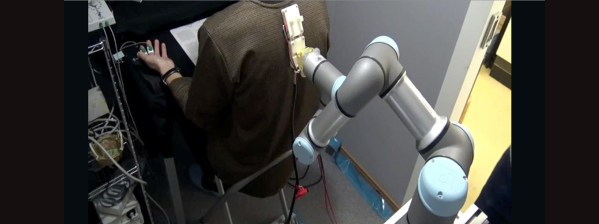

JST CREST 人間と情報環境の共生インタラクション基盤技術の創出と展開
「優しい介護」インタラクションの計算的・脳科学的解明
本プロジェクトでは，認知症に対する「優しい介護」の技術（スキル）に着目し，介護動作をウェアラブルセンサや人工知能（AI）等 を用いて計測，脳活動計測で「優しい介護」を行う際の感情認知機構を理解 得られた情報を統合して「優しい介護とは何か」を解明します。 それに基づき，介護のスキルを学べる手法やシステムを開発します．優しい介護が被介護者に有効かを可視化する技術も併せて開発し， 実際の医療現場や介護現場において計測・実証確認し有効性を検証します。
介護スキル体系として国際的に知られている「ユマニチュード」を対象とします． ユマニチュードは見つめる，触れる，話しかける，立たせるの４スキルを軸とし，同時に複数の要素を包括的にシームレスに 行なうマルチモーダルなコミュニケーション技術で，被介護者の闊達を促し介護者には負担を 軽減する「優しい介護技術」であり，本研究ではこのスキルを計算的・脳科学的に解明することを目指します．
計算的には「見つめる」スキルを画像認識，「触れる」スキルを接触・筋電，「立たせる」のスキルをモーションキャプチャと動力学解析， 「話しかける」スキルを音声情報を用いて解析し，実介護現場での観察による複数スキルの統合手法を参照しながら，良い介護スキルと そうでないもののの違いは何であるかをセンシングデータで客観的に把握できるようにします．
優しい介護の認知的な側面を探求する取り組みとして，ユマニチュードのスキルを被介護者が経験した際の認知の変化を， 表情筋活動や脳活動(fMRI)の計測を通じて定量化します．これにより，ユマニチュードのスキルによって優しさや温かさといった ポジティブな感情が喚起されるという提案を実証的に検証，さらに，そうした認知変化を生み出す脳内作用メカニズムを解明します． 上記の計算的・脳科学的解析から介護スキルを抽出できると，ウェアラブルデバイス・IoTを用いて，介護のスキルを自動評価できる システムの実装が可能になります
これらを医療機関や介護施設で試験導入し「優しい介護」を学ぼうとする学習者自らが，スキルを自己学習することが可能になるかを検証します．